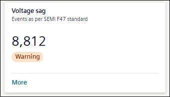
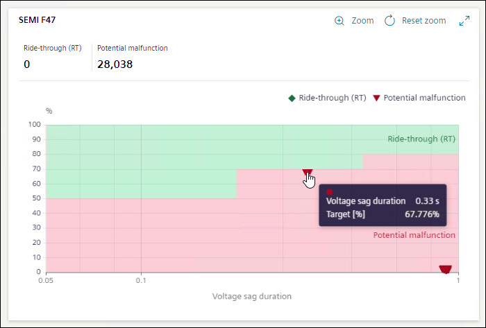
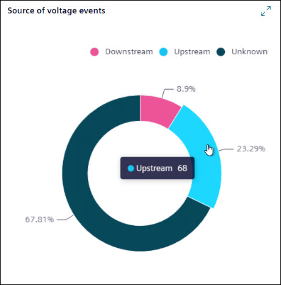
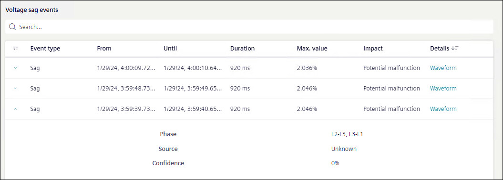

Voltage sag

Voltage sag tile shows the number of voltage sag occurred over the selected timeline. The tile shows the status of voltage events as All Ok, or Warning, as per Grid code EN 50160.
To view further details of Voltage Sag, click More.
Details for Voltage Sag event are shown in the form of graph, doughnut chart, and table. If there is any voltage event, card will show the status as Warning.

The SEMI-F47 curve is the industry standard for voltage sag.
The SEMI-F47 curve displayed is the performance curve diagram of the nominal voltage at the measuring point of the equipment versus the duration of voltage sag in seconds. The voltage sags are broadly classified as Potential Malfunction and Ride-Through(RT) based on the position of the sag on the SEMI-F47 curve.
For Voltage sag graph, X-axis shows duration of voltage sag in seconds and Y-axis shows operation value in percentage.

A doughnut chart shows the percentage of the voltage events for sources available. Hover mouse on any of source to know the number of events caused due to that source.

Voltage sag events list shows the details of the events occurred in a tabular format.
Events: Shows if it was sag event or swell event.
From: Shows date and time when event started.
Until: Shows date and time when event stopped.
Duration: Shows duration of time event lasted.
Max Value: Shows the percentage of maximum value of interruption.
Impact: Shows the impact of the event.
Details: Shows the waveform if available. To view waveforms for an event, click on Waveform.
Waveform: Displays the Event Summary and waveform chart for the selected voltage event.
- Value: Displays the value either Primary or Secondary based on the device configuration.
- Channels: Specify the channels such as voltage, current, and binary from the drop-down. Based on the selection, multiple channels are combined and displayed in a single waveform with overlay information for each curve plot when the cursor is hovered over it. For a binary channel, a separate chart is displayed below the main waveform.
The horizontal scroll bar at the bottom of the waveform allows you to move the viewing area to the left and right.
- Display Mode: Specify the mode for the waveform chart. By default, waveforms are displayed for the Instantaneous value and an another options RMS is available.
Event Summary: Displays the details such as Stations, Sample Rate, From, Value, and Record Type.
Waveform: Displays the waveform chart for the selected channels and display mode. The pointer is available in the chart to mark the value for the phasor and harmonics representation. Hover over the chart to view the value at the point.
The Phasor and Harmonics details for the selected channels are displayed below the waveform chart. Moving the pointer in the waveform displays the corresponding phasor and harmonics values accordingly.
NOTE: To view waveforms in flex client, ensure voltage waveforms are enabled in device.
Further more information on any event is also available.
- Phase: Shows between which phase event has occurred.
- Source: Shows the source of event.
- Confidence: Shows the percentage confidence on source of event.